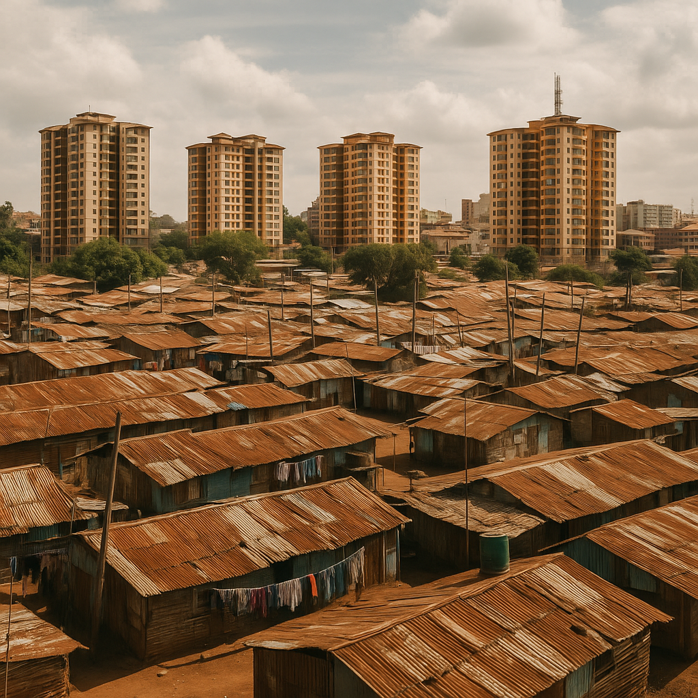
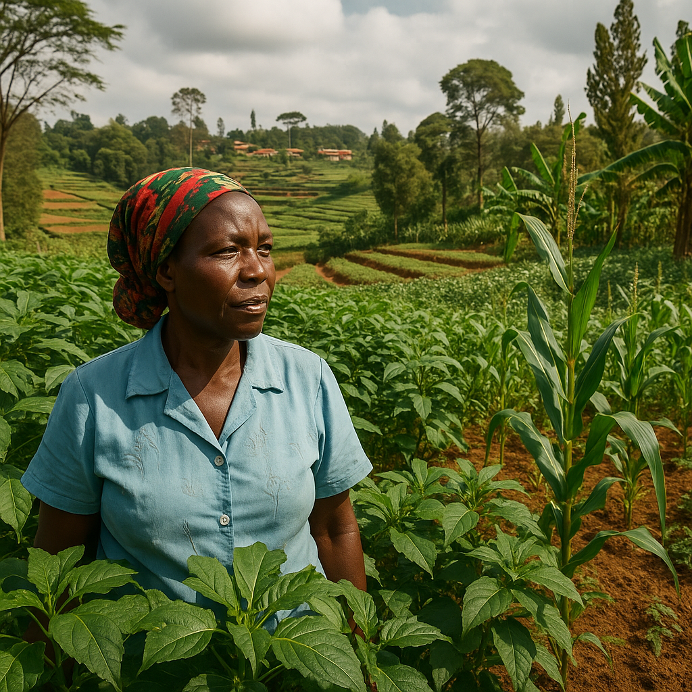
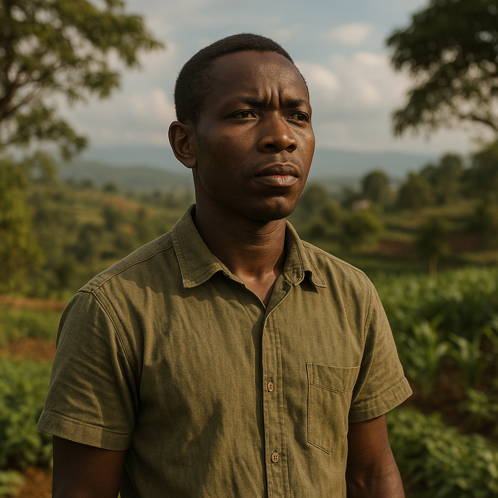
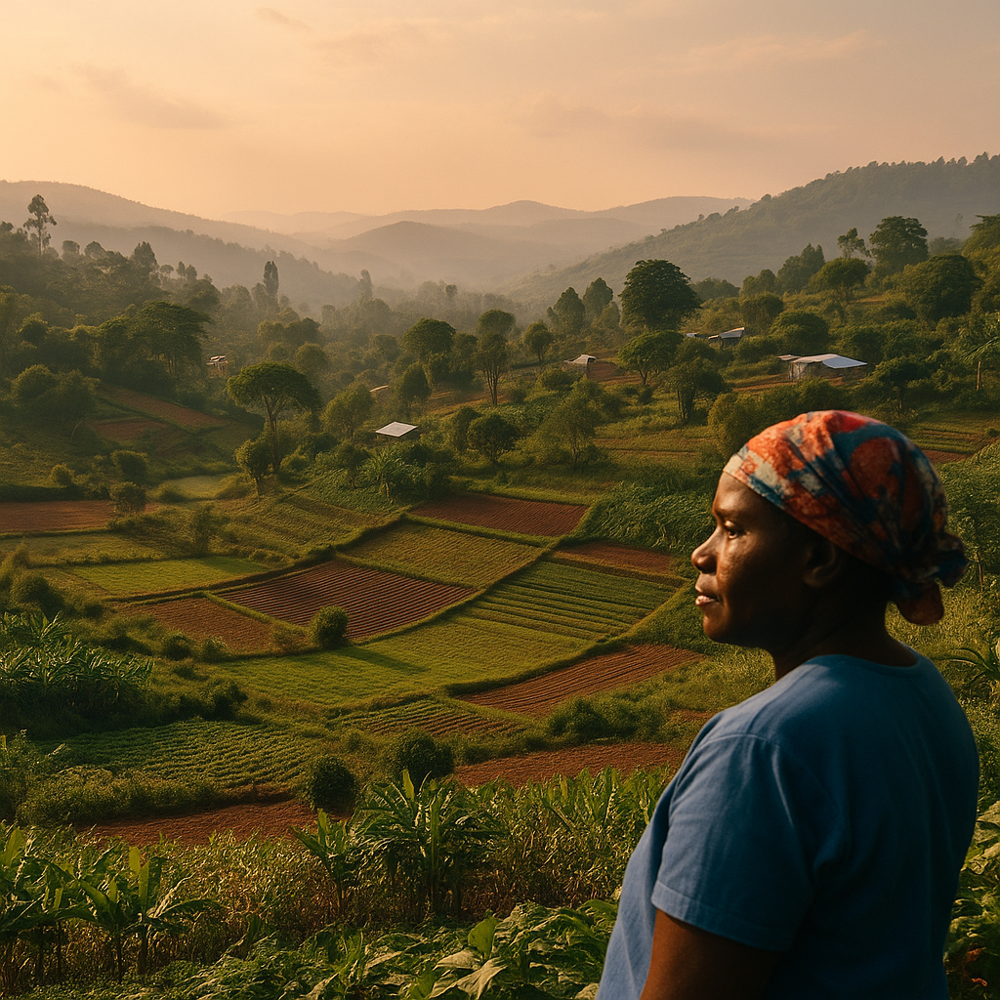

Degrowth—a movement calling for the reduction of global material throughput and the rethinking of economic growth—has gained traction across Europe and North America.
But for those of us in the Global South, the conversation often feels incomplete.
As a Kenyan writer and digital strategist, I’ve lived at the intersection of aspiration and scarcity.
In my world, “less” is not always a choice—it’s a condition.
And yet, the degrowth discourse often fails to capture this nuance. So what does degrowth mean for regions that haven’t yet grown?
The North–South Gap: Who Really Needs to Degrow? 🌍⚖️

The Global North accounts for roughly 80% of the world’s resource consumption, despite housing only 20% of its population.
Meanwhile, countries in Africa, South Asia, and Latin America continue to struggle with energy poverty, lack of infrastructure, and underemployment.
📊 Key stat: The average American uses more than 300 gigajoules of energy per year, compared to just 15–30 gigajoules in most African nations.
💡 Problem: If degrowth is about reducing consumption, does that mean stifling development for those who’ve historically been denied it?
This is where the conversation becomes uncomfortable and necessary.
What Degrowth Gets Right (Even for the Global South) ✅🔍
Degrowth rightly critiques overconsumption, extractivism, and the blind pursuit of GDP.
These themes resonate deeply in the Global South, where our lands and people have often been the fuel for global capitalism.
- 🌾 Food sovereignty
- 🤝 Community economies
- 🔁 Circular systems
Degrowth advocates for localization, reduced dependence on fossil fuels, and redistribution of power from corporations to communities.
These are values we already live by, and have for generations.
Examples
- Agroecological zones in Uganda and Ethiopia
- Community waste cooperatives in Mombasa
- Kenya’s off-grid solar hubs fostering local energy independence
What Degrowth Misses: Realities on the Ground in the Global South 🛑🌐
Despite its ideals, degrowth can feel like a prescription handed down without context.
Here’s what it often overlooks:
- 🚫 Infrastructure gaps – We still need roads, hospitals, and schools.
- 👩🏽💻 Youth unemployment – With 70% of Africa under age 30, we need job creation, not contraction.
- 💣 Postcolonial dynamics – Degrowth rarely acknowledges how colonialism shaped the current global economic imbalance.
Reimagining Degrowth from the South 🔄✨
What if degrowth was reauthored by the Global South?
Instead of “less,” we pursue:- 🔁 Regeneration
- 🧭 Pluriversality
- 🌾 Food and energy sovereignty
- 🎓 Knowledge rooted in lived experience
Think: decentralized innovation, village-based value chains, urban permaculture, and climate adaptation led by communities, not corporations.
This isn’t anti-growth.
It’s post-exploitative development.
Voices from the Margins: Scholars, Movements & Models 📚🗣️

- 🌱 Wangari Maathai – Green Belt Movement as a regenerative resistance to ecological destruction
- 🔬 Arturo Escobar – Advocates “design for the pluriverse” over top-down economics
- 🌾 Senegal’s Eco-Villages – Fusion of sustainability and local governance
- 📖 Buen Vivir (Ecuador/Bolivia) – Rights of nature + community well-being
These aren’t fringe ideas.
They’re blueprints for a regenerative economy rooted in dignity.
ESG, Climate Justice & Policy Pathways 🏛️📢
If degrowth is to have global credibility:
- 🌐 Climate finance must flow toward contextual solutions
- 📊 ESG benchmarks must measure regeneration, not just reduction
- 💰 Reparations and redistribution must be embedded in trade and aid policies
Degrowth must stop being a North-led theory and become a South-led praxis.
My Standpoint: Degrowth Must Decolonize to Be Real 🌿✊

IAs someone raised in a society where constraints are both economic and psychological, I’ve learned that dignity isn’t about having more.
It’s about having enough and having a voice in defining what “enough” looks like.
Degrowth has something to offer, but only when it listens first.
Let it be said:
👉🏽 “It’s not about less for the poor. It’s about less for the overfed—so that all may thrive.”
Conclusion: A Call for Shared Stewardship 🔁🌏

It’s time we stop exporting economic prescriptions and start listening to the visions already rooted in the lands we want to save.
🌍 Degrowth should not mean austerity. It should mean abundance redefined.
🪴 So let’s co-author a future where progress doesn’t repeat the North’s mistakes, and where regeneration replaces extraction.
💭In a world racing toward collapse, who gets to slow down, and who’s been held back all along?